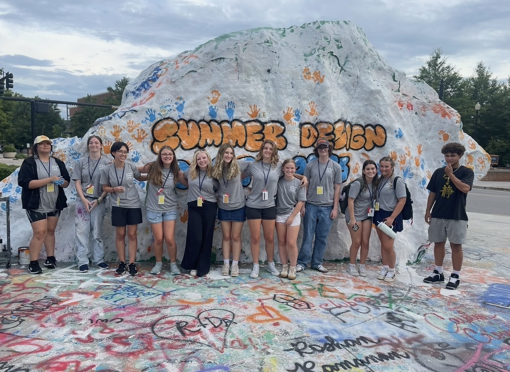
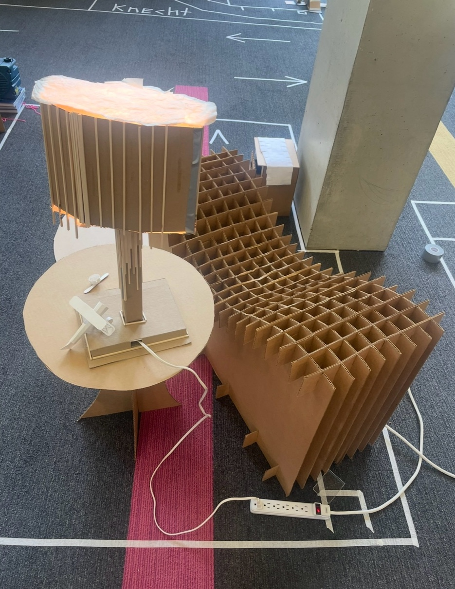
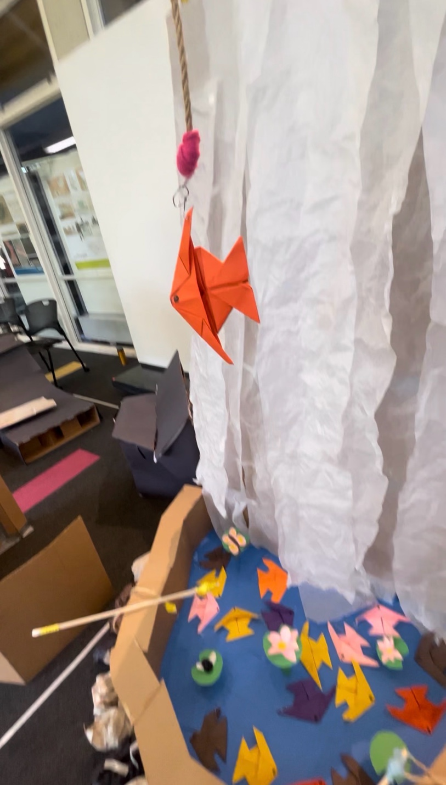
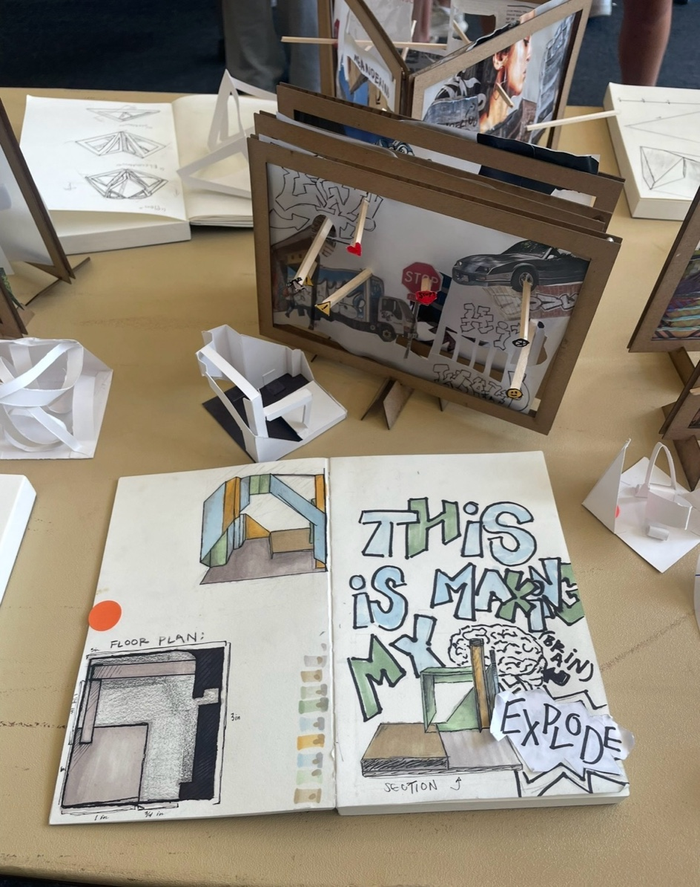
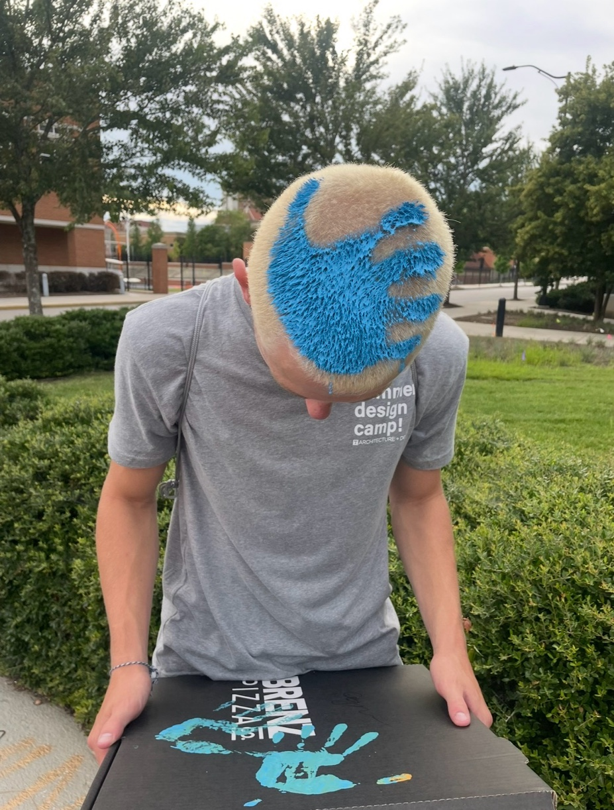
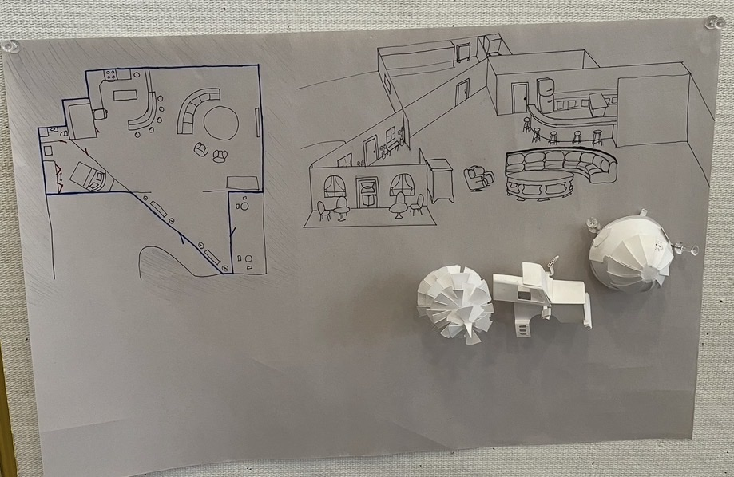
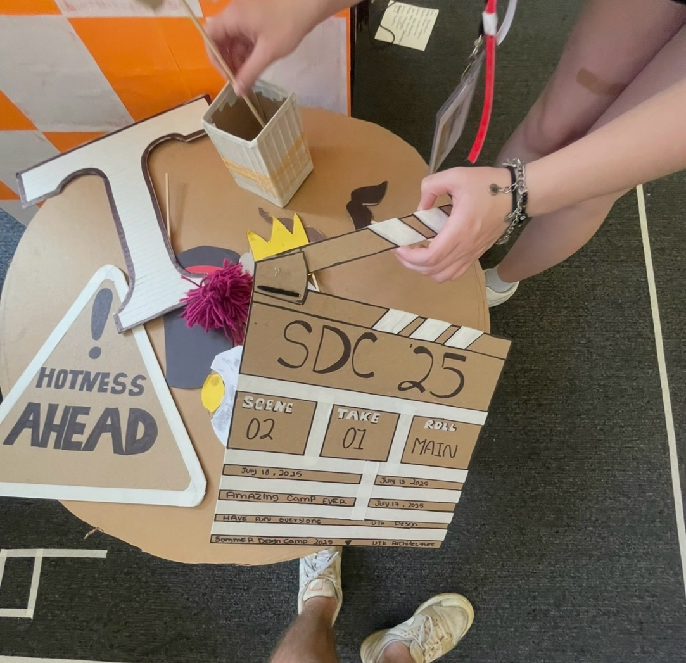
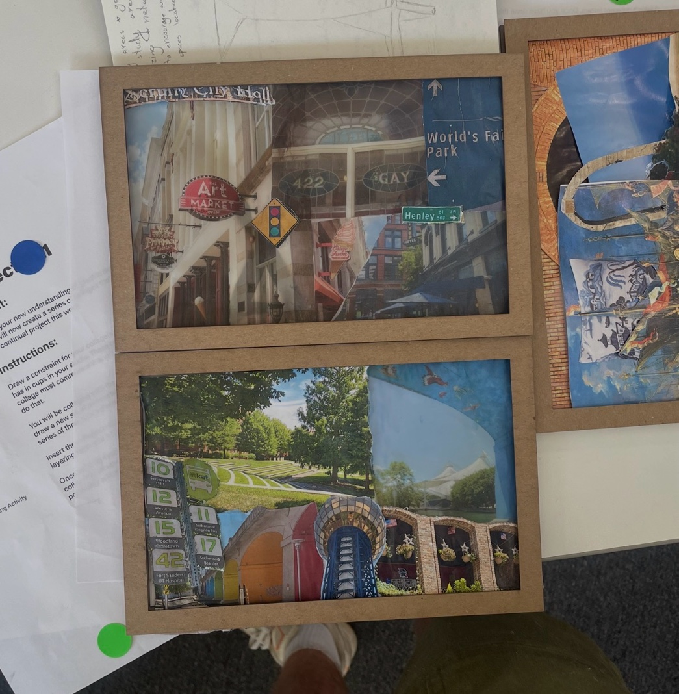
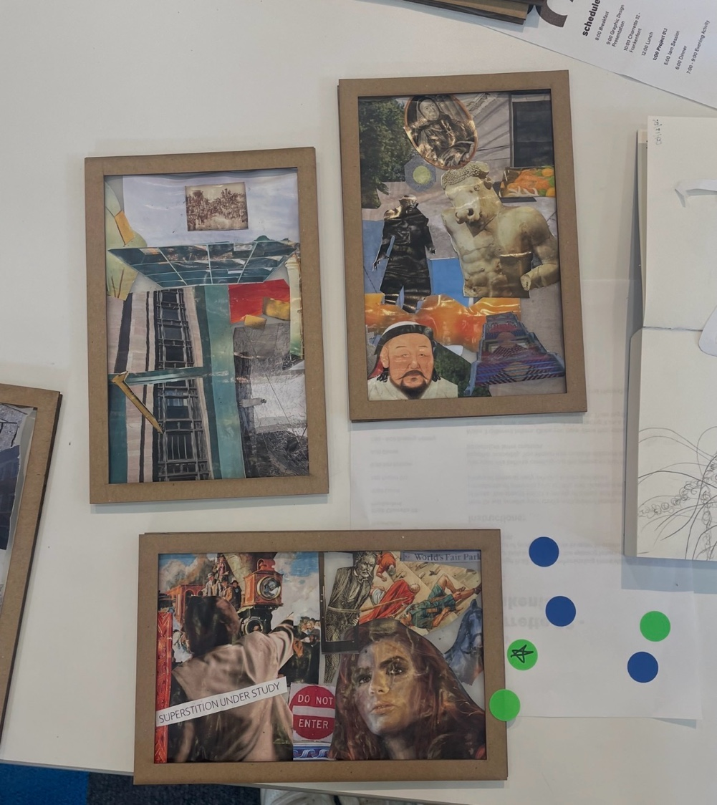

Summer Design Camp
SDC!
One week. Four disciplines. Real studio work.
7
Days
170
Campers
12
Groups
Now · Up Next
Opening Lecture + Camp Kickoff
Group 07 Chat
7
Group 07
Macy Steingrube · 14 members
MS
Macy (TA)
Good morning everyone! We meet at the A+A Building entrance at 9. Bring your sketchbooks.
8:14 AM
KL
Kai L.
Is the entrance on Volunteer Blvd or the other side?
8:22 AM
MS
Macy (TA)
Volunteer Blvd, main doors. Look for the orange banner.
8:23 AM
JC
You
On my way!
8:31 AM
Campus Map
SCHEDULE
GALLERY
Work from this week · anonymous by default

Camp · Day 1
We painted The Rock. SDC was here.

Architecture · Day 1
Cardboard, a light, and a few good ideas.

Landscape · Day 3
Gone fishing.

Interior Arch · Day 4
This is making my brain explode.

Camp · Day 1
Getting a little too into it.

Interior Arch · Day 4
No caption

Final · Day 5
Scene 02, Take 01. SDC '25.

Graphic Design · Day 2
No caption

Graphic Design · Day 2
No caption
JC
Jordan Chen
Architecture Track
Group 07 · TA: Macy Steingrube · SDC! 2026
6
Uploads
4
Sessions
87
Likes
01
Site + Context
Observation, sketching, and documentation of a campus site.
Photo 01
02
03
02
Material Study
Cardboard model exploring structure, texture, and light.
Front
Side
Top
Camp Book · Print Template Preview
Jordan Chen
Architecture · Group 07 · SDC! 2026
SD
C!
C!
photo 01
photo 02
photo 03
photo 04
Session 01, Site + Context. Observation and documentation of architectural form and material character across the campus environment.
Summer Design Camp 2026 · UTK CoA+Dpg. 14
CAMPUS
Tap a location for info and walking time
Magnolia Hall
Home base · Dorms · Check-in
Home
base
TREC / Pool
Tennessee TREC · Pool · Evening activities
~5
min walk
Rocky Top Dining
Breakfast, Lunch + Dinner · Vol Card required
~12
min walk
Art + Architecture
1715 Volunteer Blvd · Studios · Fab Lab
~14
min walk
ABOUT
Summer Design Camp
UTK College of Architecture + Design · 2026
170 high school students. 7 days. 4 design disciplines. 12 groups, each run by a teaching assistant. This is your first real look at what designing for a living actually feels like.
Camp Director
AC
Anja Cordell
Camp Director
UTK Landscape Architecture alumna, 2025. Runs all camp operations from logistics to programming.
Academic Advisors
JB
Jessica Bocangel
Academic + Professional Dev Advisor
B.Arch UTK 2006, Summa Cum Laude. Practiced at Design Innovation Architects, then led a non-profit focused on housing for people experiencing chronic homelessness. Habla español.
JB
Julie Beckman
Director of Student Services
Designer of the 9/11 Pentagon Memorial and Space Shuttle Columbia Memorial. MArch, Columbia University. Co-founder of KBAS.
DM
DeMauri Murray
Academic Advisor
Supports CoA+D students across all programs with a focus on equity, student success, and pathways into the design professions.
Teaching Assistants
MS
Macy Steingrube
Teaching Assistant
Studio facilitator and camp counselor for Groups 05 and 07.
SB
Sam Brott
Teaching Assistant
Studio and logistics support across all four discipline days.
+
More TAs
Teaching Assistants · TBD
Full TA roster fills in once confirmed. 12 groups means at least 12 TAs.
Floaters
CW
Cora Williams
Floater · Logistics Support
Handles resources, supply runs, and flexible support all week.
MJ
Melani Jimenez
Floater · Logistics Support
Resource coordination and on-the-ground support throughout the week.
A
Architecture
B.Arch (5yr) · M.Arch · NAAB
The 5-year B.Arch goes straight to licensure. It's studio-based, rigorous, and built around designing things that will actually be built. You'll work with drawing, modeling, fabrication, and construction. Access to a 22,000 sq ft Fab Lab with CNC mills, laser cutters, and 3D printers.
Faculty
JM
Jeremy Magner
Assistant Professor
Challenges the line between designer and builder. Former artist-in-residence at Autodesk Pier 9. Worked at Gensler, Morphosis, and Machineous.
MS
Mark Stanley
Assistant Professor
Co-founder of StudioMARS. Studies architecture's relationship to larger systems of culture, technology, and ecology through speculative design.
FH
Frances Hsu
Assistant Professor
Licensed architect and scholar. Former designer at OMA and UN Studio. Work published in JAE and The Cambridge Architectural Journal.
SW
Scott Wall
Professor
Registered architect, author, and artist. Taught at Rice, Georgia Tech, and Tulane. Former interim director of the School of Architecture.
GD
Graphic Design
BFA in Graphic Design
Added to CoA+D in 2019. Covers typography, identity, motion, interaction, and publishing. Portfolio review required to advance. Graduates go into design studios, agencies, UX, film, and game studios.
Faculty
CC
Chris Cote
Assistant Professor
MFA from RISD. Studies alternative publishing through interactive installations and public interventions. Teaches typography, information design, and the capstone.
EE
Everett Epstein
Lecturer
Former brand designer at Gensler London for LEGO, Netflix, and P&G. MFA from RISD. Focuses on web design, typography, and grammar.
KM
Kimberly Mitchell
Assistant Professor
Founder of the Design for Care Lab. Research on design, aging, and health. Known campus-wide as one of the best teachers in the building.
LB
Lindsay Brine
Associate Prof. of Practice
UTK alumna. Former Creative Director at Designsensory. 18 years of agency experience. 2020 AAF-Knoxville Hall of Fame inductee.
CS
Cary Staples
Professor
Co-founder of APP.FARM. NSF-funded research at the intersection of design, data, and technology. Board games, VR, and public experience design.
TA
Tim Arment
Digital Futures Fellow
MFA from UW-Madison. Works at the edge of 3D animation, VR, and fine art. Co-created the 4D foundations course with Mitchell and Cote.
IA
Interior Architecture
BS in Interior Architecture · Est. 1997
Joined CoA+D in 1997. Focuses on the design of inhabited space, from residential and commercial interiors to healthcare environments. Technical, material-driven, and deeply human-centered.
Faculty
FD
Felicia Dean
Assistant Professor
Graham Foundation grant recipient. Research on material identity, craft, and space-making through a bi-racial, cross-cultural lens. 2024 IDEC Teaching Excellence Award.
HK
Hojung Kim
Assistant Professor
Co-founder of the MM Lab. Research on material practices in Southeast Asia, examining how craft traditions resist globalized production pressures.
LT
Liz Teston
Associate Professor
Research on public interiority and the politics of design. Organizer of the 2023 Public Interiority Symposium. SCAD BFA in Interior Design.
LA
Landscape Architecture
MLA · MS Landscape Arch · Est. 2008
Launched in 2008 in partnership with the Herbert College of Agriculture. Sits at the intersection of ecology, design, and public space. UTK's mountain and river setting makes it a natural laboratory for this kind of work.
Faculty
AM
Andrew Madl
Assistant Professor
2025 Dudley Scholar. Pursuing speculative research called Wild Data, examining how data infrastructure reshapes the way we coexist with landscape.
SB
Sarah Bolivar
Assistant Professor
Research on migrating plants, wildlife, and community-based landscape conservation. Former work with the Central Park Conservancy and Snohetta.
1715 Volunteer Blvd · Knoxville, TN
The Art + Architecture Building
160K
sq ft
360
ft atrium
1981
opened
450+
desks
The building you'll spend most of your week in is itself worth studying. It's a Brutalist concrete-and-glass structure that won a national competition in 1977, beating out 52 other submissions. It's the only building on UT's campus chosen this way.
The architects were Bruce McCarty and his son Doug McCarty, a UTK graduate who helped design his own school's building. Bruce McCarty was already one of Knoxville's most respected architects, known for bold cantilevers and buildings that played seriously with light. The defining move inside is a 360-foot atrium running the full length of the building, open four stories up, filled with natural light from above. Every studio floor overlooks it.
Not everyone loved the exterior at first. The raw concrete Brutalism was controversial enough that McCarty said in a later interview he might choose a different material if he did it again. But the interior works. A building that teaches you something about space just by being in it is a good place to study design.
At the 1981 dedication, Chancellor Jack Reese got a laugh noting that UT's fall traditions had come to include "pep rallies, football games, and construction of the Art/Architecture building." Ground had been broken in 1977, and delays pushed completion back two years.
Today the building has 450+ student workstations, a woodshop, fabrication spaces, the Digital Futures Lab with AR/VR equipment, McCarty Auditorium, gallery spaces, and the Center for Student Development on the ground floor where camp advisors work. A separate 22,000 sq ft Fab Lab in a renovated downtown building adds more tools.
The architects were Bruce McCarty and his son Doug McCarty, a UTK graduate who helped design his own school's building. Bruce McCarty was already one of Knoxville's most respected architects, known for bold cantilevers and buildings that played seriously with light. The defining move inside is a 360-foot atrium running the full length of the building, open four stories up, filled with natural light from above. Every studio floor overlooks it.
Not everyone loved the exterior at first. The raw concrete Brutalism was controversial enough that McCarty said in a later interview he might choose a different material if he did it again. But the interior works. A building that teaches you something about space just by being in it is a good place to study design.
At the 1981 dedication, Chancellor Jack Reese got a laugh noting that UT's fall traditions had come to include "pep rallies, football games, and construction of the Art/Architecture building." Ground had been broken in 1977, and delays pushed completion back two years.
Today the building has 450+ student workstations, a woodshop, fabrication spaces, the Digital Futures Lab with AR/VR equipment, McCarty Auditorium, gallery spaces, and the Center for Student Development on the ground floor where camp advisors work. A separate 22,000 sq ft Fab Lab in a renovated downtown building adds more tools.
UT
University of Tennessee, Knoxville
Founded in 1794 as Blount College, which makes it older than the state of Tennessee. UTK's 550-acre campus sits at the foot of the Smoky Mountains with about 36,000 students across 14 colleges. It's a Carnegie R1 research institution, which means faculty here are doing nationally significant work and students get to be part of it.
THE ROCK
The Rock
A campus landmark that gets repainted nearly every day. Student groups, teams, and individuals paint it to announce events, celebrate wins, or just leave their mark. You walk past it on the way to the A+A Building. On Friday it will almost certainly look different than it did on Monday.
ROCKY TOP
Rocky Top + Neyland Stadium
Rocky Top is not just a song here, it's a reflex. Neyland Stadium on the Tennessee River is one of the largest in the country. On game days the Vol Walk is a river of orange stretching across campus. Even if football isn't your thing, it's something to see at least once.
Knoxville + The Smokies
Third-largest city in Tennessee with a growing creative and maker scene. The Great Smoky Mountains National Park, the most-visited in the country, is 30 minutes away. The natural environment here is not just scenery. It shows up in how students think about design.